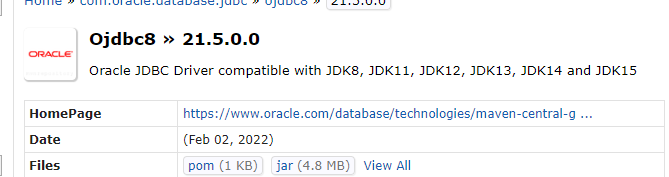

1. Data추상화:사용할 Data중 필요한 항목이 무엇인지 파악한다. 2.VO클래스 작성:추상화 된 데이터를 기준으로 VO클래스를 작성한다. 3. Service클래스 작성 1.Data 생성 method 2.생성된 Data에 대한 연산 method 4.Controller클래스 작성 1.main()method를 작성하고 Service클래스와 연경 2.Data생성,Data확인,연산후 Data확인 최종결과 출력 확인

jdk